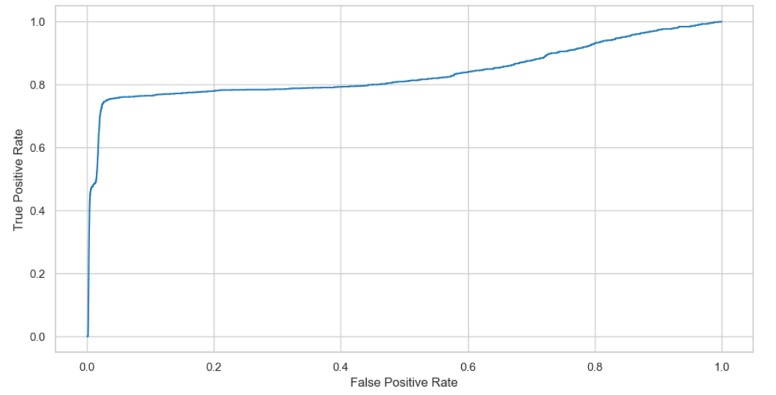
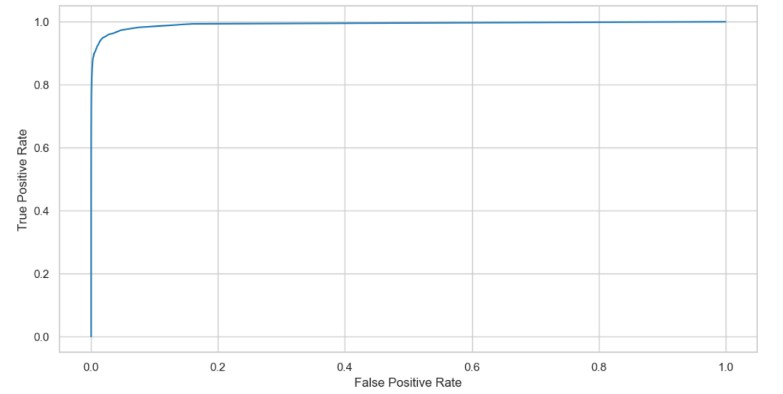
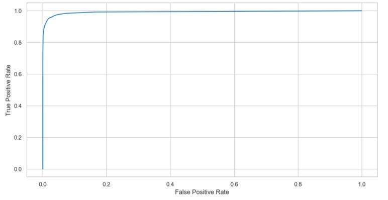

PROJECT SNAPSHOT
Business Goal: Develop an automated fraud detection system capable of identifying suspicious credit card transactions while minimizing false alarms for legitimate customers.
Dataset: 1,296,675 simulated credit card transactions, with fraud representing only 0.58% of total transactions.
Key Result: Compared Logistic Regression, Random Forest, and XGBoost models, with XGBoost achieving the strongest overall performance with a ROC-AUC of 0.992.
Tech Stack: Python, Pandas, NumPy, Scikit-Learn, XGBoost, imbalanced-learn, Matplotlib, Seaborn.
I. Business Problem
Credit card fraud detection is a high-impact classification problem where fraudulent activity represents only a very small percentage of total transaction volume. This makes model development challenging because a standard model can achieve high accuracy simply by predicting most transactions as legitimate. The objective of this project was to build a fraud detection pipeline that improves fraud identification while controlling false positives that could disrupt legitimate customers.
II. Data Overview & Exploratory Data Analysis
The dataset contains simulated credit card transactions from 2019 to 2020, covering 1,000 customers and 800 merchants. The analysis focused on understanding class imbalance, transaction behaviour, customer demographics, and temporal fraud patterns.
Class Imbalance
Fraudulent transactions represented only 0.58% of the dataset, compared with 99.42% legitimate transactions. This severe imbalance meant that accuracy alone was not a reliable evaluation metric.

Transaction Amount Behaviour
Most legitimate transactions were relatively low value, with the majority occurring below $200. Fraudulent transactions showed distinct spending patterns, including peaks around $50 and a secondary peak around $300. This indicated that transaction amount could be an informative feature for fraud detection.

Customer Age Distribution
The age distribution differed between legitimate and fraudulent transactions. Legitimate transactions showed two clear peaks among customers aged 35–40 and 50–55, while the fraud distribution was smoother and more evenly spread across older age groups. This suggests that customer age may be a useful supporting feature during model development.

Transaction Timing
Fraudulent transactions were more concentrated during nighttime hours, especially between 10 p.m. and 3 a.m.. This pattern suggests that transaction time is an important behavioural signal, as unusual activity during low-usage hours may indicate higher fraud risk.

III. Methodology & Technical Approach
The modelling pipeline transformed raw transaction records into predictive features and compared multiple classification models under a highly imbalanced setting.
- Feature Engineering: Extracted temporal features such as hour, day of week, and month from transaction timestamps.
- Customer Features: Derived customer age from date of birth to capture demographic risk patterns.
- Categorical Encoding: Converted categorical variables into numerical format using one-hot encoding.
- Class Imbalance Handling: Applied SMOTE only to the training data to increase the model's ability to learn fraud patterns.
- Model Comparison: Benchmarked Logistic Regression, Random Forest, and XGBoost.
IV. Results & Model Comparison
The models were evaluated using business-relevant metrics, with particular attention to ROC-AUC, precision, and recall.
| Model | ROC-AUC | Strength | Business Use Case |
|---|---|---|---|
| Logistic Regression | 0.84 | Baseline model | Useful as an interpretable benchmark for fraud classification. |
| Random Forest | 0.99 | Strong non-linear performance | Effective at detecting complex fraud patterns across transaction features. |
| XGBoost | 0.992 | Best overall performance | Most suitable candidate for scalable fraud detection workflows. |
Logistic Regression

Random Forest Classifier

XGBoost

The tree-based models significantly outperformed Logistic Regression, indicating that fraud behaviour was better captured through non-linear feature interactions. XGBoost achieved the strongest overall performance and was selected as the preferred model.
V. Understanding the Metrics
Because the dataset was highly imbalanced, accuracy was not used as the main performance measure. A model could appear accurate while still missing most fraudulent transactions. Instead, the focus was placed on metrics that better reflect business risk.
- Precision: Measures how reliable fraud alerts are. High precision reduces false alarms and lowers investigation workload.
- Recall: Measures how many actual fraud cases are detected. High recall reduces financial exposure by catching more suspicious transactions.
- F1-score: Balances precision and recall, making it useful when both missed fraud and false alarms are costly.
- ROC-AUC: Measures how well the model separates fraudulent and legitimate transactions across different thresholds.
VI. Model Selection Rationale
XGBoost was selected as the preferred model because it achieved the highest ROC-AUC and handled complex relationships between transaction features effectively. Although Random Forest achieved similar performance, XGBoost provided slightly stronger discrimination and is commonly used for structured tabular classification problems.
Each model served a different purpose in the project:
- Logistic Regression — provided a simple and interpretable baseline.
- Random Forest — captured non-linear transaction patterns and delivered strong performance.
- XGBoost — produced the best overall performance and was selected as the recommended model.
VII. Business Impact
This project demonstrates how machine learning can support fraud monitoring, operational efficiency, and customer protection.
- Risk Reduction: Improved fraud detection helps identify suspicious transactions earlier and reduce potential financial losses.
- Operational Efficiency: Higher precision reduces false-positive alerts and lowers the workload for fraud investigation teams.
- Customer Experience: Minimizing incorrect transaction blocks protects legitimate customers from unnecessary disruption.
- Scalability: The pipeline can be extended into high-volume transaction monitoring workflows.
- Decision Support: Model outputs can help prioritize suspicious transactions for review based on risk level.
VIII. Key Takeaways
- Built an end-to-end fraud detection pipeline for a highly imbalanced dataset.
- Performed exploratory analysis to identify behavioural fraud patterns.
- Engineered temporal and customer-level features to improve predictive performance.
- Applied SMOTE to improve minority class learning during training.
- Compared Logistic Regression, Random Forest, and XGBoost using business-focused metrics.
- Identified XGBoost as the strongest model for fraud detection based on ROC-AUC and overall performance.
IX. Full Technical Implementation
The complete project includes data preparation, exploratory analysis, feature engineering, model training, evaluation, and performance comparison.
View Full Project on GitHub